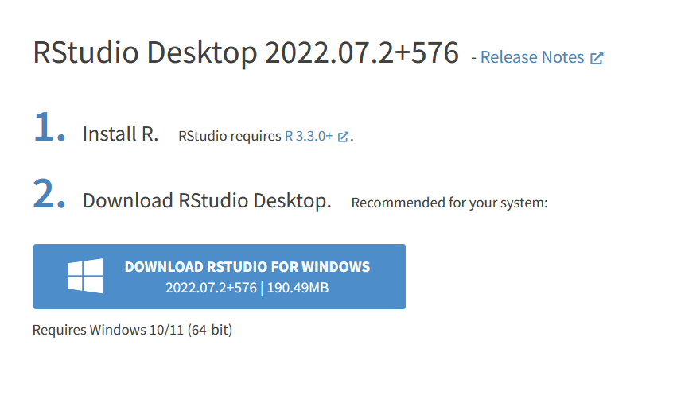
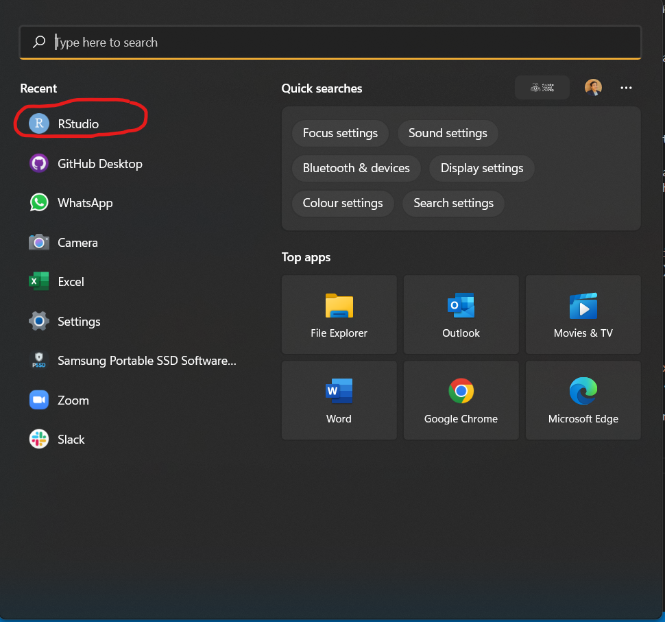
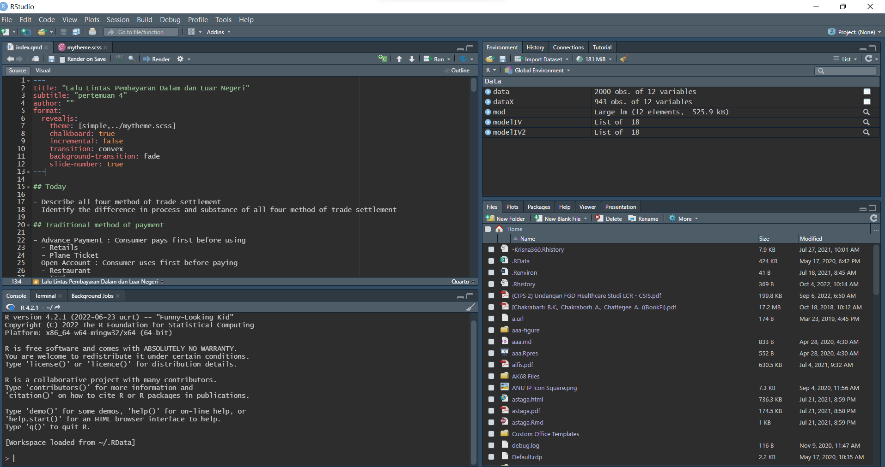

Regresi dengan R dan RStudio
Pendahuluan
Regresi itu hal mendasar. Banyak riset menggunakan regresi dan variasinya.
R dan RStudio is an amazing dan gratis! Apapun bisa digoogle, dan ada package untuk semua metode!
Anak-anak PIWAR diajarin R. Kali aja ada yang mau thesis pake R, dosennya harus udah paham. Bikin penelitian pake R mungkin meningkatkan kans mahasiswa untuk nulis bareng dosennya.
Persiapan
Di laman ini, anda akan diantarkan ke step-by-step menginstall r di komputer anda. Prosesnya mudah kok, apalagi kalau anda sudah pernah install aplikasi di komputer sebelumnya. Hal-hal yang perlu anda install antara lain adalah R, RStudio dan package-package yang diperlukan.
Minimal saya harap anda paham bagaimana cara berselancar di internet. Kami harapkan anda juga memahami struktur folder di komputer anda. Anda tau di mana lokasi file yang anda download, gimana cara bikin new folder, dan bagaimana cara navigasi my computer di Operating System masing-masing.
Jangan lupa restart komputer setelah install dan jangan lupa download data-data latihannya sebelum mulai. Tapi kalo anda punya data sendiri buat nyoba-nyoba pastinya lebih seru.
Intinya anda perlu:
- Install R dan RStudio serta packages yg penting.
- Install Quarto.
- Bikin akun github.
Install R dan RStudio
CARA DOWNLOAD R (80 MB)
- Buka website cran.r-project.org/
- Pilih “Download R for Windows”
- Pilih “install R for the first time” di kolom base
- Pilih “Download R-4.2.1 for Windows” di paling atas.
- Kalo udah di download, install app nya di laptop okeng.
CARA DOWNLOAD RSTUDIO (190.50 MB)
- Buka website rstudio.com
- Pilih “DOWNLOAD” di sebelah SUPORT, DOCS & COMMUNITY (Pojok kanan atas)
- Scroll ke bawah, pilih “Rstudio Dekstop Free Download”
- Pilih “DOWNLOAD RSTUDIO FOR WINDOWS” (yang ada icon windows nya)
- Kalo udah di download, install app nya di laptop yaa.
Install R
R adalah program yang digunakan untuk menghitung. Dia sendiri bentuknya agak gak jelas. Jika anda cuma punya R, anda harus ngerun R pake console gitu. Sangat tidak intuitif. Nulis scriptnya juga bisa, tapi pake text editor yang juga kurang intuitif. Tapi bagaimanapun juga, programnya harus ada di komputer anda.
Cari installernya pakai google
Cara paling gampang install r adalah dengan menggunakan google search, lalu ketik install r for windows jika laptop anda windows. Anda akan diantarkan ke installer r untuk versi windows 64 bit. Komputer jaman sekarang rata-rata 64 bit. Jika komputer anda adalah 32-bit, maka harus install versi r yang jadul. Google aja install r for windows 32-bit.
Sebagian besar komputer jaman sekarang pasti pake 64-bit. Tapi jika anda gak yakin, cara ngecek bit anda bisa dilihat di sini.
Datang langsung ke website r-nya
Tanpa google juga bisa kok. langsung aja datang ke websitenya. Ada beberapa mirror download yang bisa dipilih, tapi untuk Indonesia, lebih baik pakai servernya Universitas Syiah Kuala yang bisa diakses di sini. Anda cukup download base. Saat tulisan ini dibuat, versi R yang terbaru adalah R-4.2.1 for windows. Ini adalah versi r untuk windows 64-bit.
Cara manapun yang anda pilih, anda akan diantarkan ke lokasi yang kurang lebih sama. Anda akan download installernya yang besarnya sekitar 78 Megabyte. Tunggu aja sampai selesai. Nanti nama file-nya R-4.2.1-win.exe. Pastikan anda familiar dengan lokasi file yang anda download ini di folder anda.
Kalau sudah ada installernya, anda tinggal dobel klik file-nya lalu next-next sampe selesai. Selamat, anda sudah berhasil menginstall r
Install RStudio
RStudio ini bukan program yang anda pakai untuk hitung. RStudio disebut juga dengan IDE (Integrated Development Environment). Dia ini lebih ke software yang anda gunakan untuk mengakses R dengan lebih intuitif. Di RStudio anda akan bisa memanage package lebih mudah dan menulis script r dengan lebih intuitif. Intinya, RStudio adalah software yang anda pakai untuk berinteraksi dengan R. Ketika anda regres, anda menulis kodenya di RStudio, akan tetapi yang nge-run regresi anda adalah R.
Cari Installernya pakai google
Yup, anda juga bisa download installernya lewat google dulu. langusng aja google download RStudio, maka pilihan pertamanya adalah si RStudio ini. Pilih pilihan yang tulisannya “Download RStudio IDE” (pilihan paling atas) untuk ke laman RStudio, lalu pilih RStudio desktop yang free. RStudio akan memilihkan installer yang pas untuk anda. Langsung aja tekan tombol biru besar yang tulisannya “Download RStudio for Windows”.

RStudio filenya lebih gede dari R, sekitar 182 MB. Installernya namanya RStudio-2022.07.2-576.exe. angka-angka itu nama versinya. Jika anda download lagi di masa depan, mungkin nama versinya berubah karena ada update.
Setelah anda sudah selesai download, double klik installernya lalu next-next aja sampe beres. Jangan lupa create shortcut jika anda lebih suka pakai shortcut di desktop untuk mengakses program anda.

Interaksi dengan RStudio
RStudio punya tampilan seperti di bawah ini:

Jangan kaget jika tampilan RStudio anda tidak persis seperti ini. Tampilan saya keliatan seperti ini karena saya sedang mengerjakan sesuatu di RStudio saya. Jika anda baru buka pertama kali, pasti masih kosong. Yang penting adalah anda bisa lihat ada 4 kuadran di RStudio.
Kuadran 1 (kiri atas) akan saya sebut script. Ini adalah tempat anda menulis script untuk kode anda. Coba arahkan mouse anda ke kiri atas, ada tulisan
file, lalu pilihnew filelalu pilihR Script. Anda juga bisa pakai shortcutctrl+shift+n. Hal ini akan memunculkan file namannyaUntitled1yang mana adalah R Script anda. Nanti kita bahas di kelas bagaimana mengisi R Script anda. Gampang kok. Tinggal kopas aja.Kuadran 2 (kanan atas) adalah environment window. Di kuadran ini anda bisa lihat file-file yang sudah anda buat dengan R, seperti data dan grafik. Nanti kuadran 2 ini akan penuh sendiri seiring anda berinteraksi dengan RStudio.
Kuadran 3 (Kanan bawah) adalah File window. Di sini anda bisa lihat struktur folder anda maupun membuka file-file gambar. Nanti kita akan bahas di kelas.
Kuadran 4 (kiri bawah) disebut juga dengan console. Di sinilah command-command R anda akan diketik. Ada beberapa hal yang anda bisa coba.
- coba anda ketik
versionlalu enter. Apa yang anda lihat? - Kemudian, ketik
getwd()lalu enter. Apakah anda mengerti apa yang dihasilkan oleh command ini? Apakah anda tau lokasi yang dimaksud? - Anda juga bisa jadikan console seperti kalkulator. coba ketik
1+1lalu enter. - R juga bisa store values. misalnya anda coba ketik
a<-1+1lalu enter. kemudian ketikalalu enter. - Ketik
b<-3*3lalu enter. lalu ketika+b, enter.
Ada banyak yang bisa anda coba, ada banyak sekali command yang anda bisa masukan di console. Namun seperti anda lihat, console lebih digunakan jika anda perlu memasukkan kode yang pendek-pendek. Untuk kode yang panjang, kita akan lebih sering menggunakan R Script.
Nah, contoh kode yang ada di kelas itu semua dapat di-run di RScript ini. kopas aja kode yang ada di kelas ke R Script anda, lalu tekan ctrl+a untuk ngeblok seisi r script lalu tekan run (ada di kanan atas dari area r script). Atau pake ctrl+enter untuk shortcutnya.
Nanti kita bahas di kelas bagaimana menulis kode di R Script. Namun untuk sekarang, mari kita persiapkan komputer anda untuk penggunaan di kelas. Anda memerlukan beberapa package yang harus diinstall.
Install package
R sendiri adalah sebuah software komputasi yang elegan namun fungsinya cukup terbatas. Untuk menggunakan R dengan lebih mudah, banyak peneliti membuat packages atau tambahan software agar R bisa digunakan dengan lebih intuitif. Beberapa packages ini perlu diinstall 1x saja, tapi untuk setiap penggunaannya perlu dipanggil dengan command library.
Sebelum kita mulai di kelas, ada beberapa packages yang perlu anda install. Cukup kopas kode berikut ini ke console anda:
install.packages(c("tidyverse","WDI","readxl","writexl","modelsummary"))Jangan lupa tekan enter dan pastikan ada sambungan internet.
Ada 4 packages yang diinstall di atas: tidyverse adalah package yang digunakan untuk data cleaning. WDI adalah package yang digunakan untuk menarik database-nya World Bank yang namanya World Development Indicators. readxl adalah package yang kita perlukan untuk membaca data excel ke r. kableExtra adalah package untuk membuat tabel.
Untuk sekarang, cukup kita install dulu. Nanti pakainya pas di kelas.
Download data latihan
Jangan lupa untuk download file-file excel yang akan kita pakai untuk latihan. File-file tersebut dapat diakses di sini.
Install Quarto
Quarto adalah versi upgrade dari rscript. Dengan file quarto (ekstensi .qmd), anda bisa menggabungkan kode R anda dengan tulisan, dan dirender menjadi html, pdf dan word sekaligus, setelah itu anda dapat edit wordnya. Tapi kekuatan quarto yang sebenarnya (menurut saya) adalah render html-nya.
Quarto dapat didownload di sini. Atau google aja “download quarto” Quarto dapat digunakan dengan VSCode, Jupyter, dan text editor lainnya. Tapi paling gampang sih kita pakai RStudio.
Bikin akun github
Github aslinya adalah sebuah website untuk hosting code projects (disebut juga dengan repository. Dia berfungsi sebagai version control dan melakukan kolaborasi terutama untuk project open source. Singkatnya, semua programer pasti pernah pake github. Namun github bisa menawarkan hosting mini untuk website anda.
Buka github dan buat akun baru di sini. Pilih username yang cukup profesional dan mudah diingat. Username ini akan jadi bagian dari url website anda. Kode verifikasi akan dikirim ke email anda. kalau disuruh pilih paket, pilih yang free.
Packages
Hari ini kita akan menggunakan beberapa packages